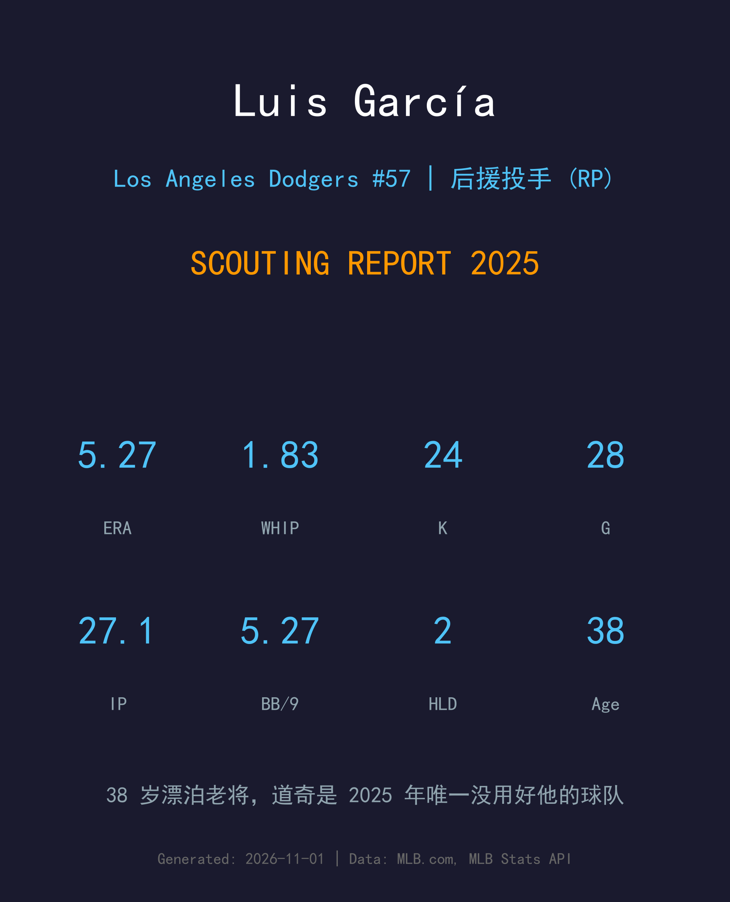
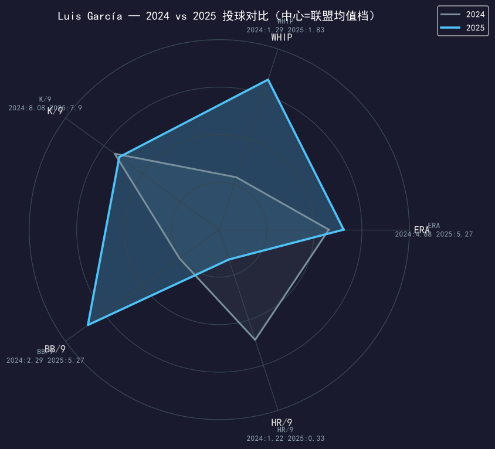
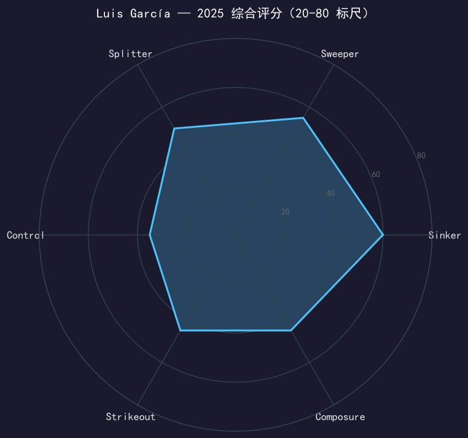

Los Angeles Dodgers #57 | 后援投手 | 右投 | 38 岁漂泊老将，道奇是 2025 年唯一没用好他的球队

Luis García 的 2025 年是一条堪称离奇的曲线：在道奇的 28 场里，他交出 5.27 自责分率、1.83 WHIP、BB/9 5.27——然后在 7 月 4 日被释出；身披天使球衣 20 场自责分率 2.00，转投国民又是 10 场 0.90。离开洛杉矶之后，他合计 1.61 自责分率。
数据不会说谎：道奇是 2025 年唯一一支没能用好他的球队。不是手臂老了——同一颗 96.9 mph 的伸卡全年没变；出问题的是控球纪律：道奇段每 9 局送出 5.27 次保送，是他在天使（1.50）的三倍半。加上 5 月底的内收肌拉伤，他在洛杉矶的半年是「带伤硬投 → 控球崩盘 → DFA → 重生」的完整剧本。
从 2025 年 11 月的视角看，这位 38 岁的老将用后半季证明了自己还能投：三支球队、58 场、全季 3.42 自责分率。他是那种永远不愁下家的老兵牛棚——问题在于，哪支球队愿意给他一份稳定的合同。
7 月 10 日代表费城人登上大联盟，从此开启了横跨十二个赛季、先后效力七支 MLB 球队的漂流生涯——从费城到洛杉矶天使，再到游骑兵、红雀、教士、红袜、道奇、国民。
费城人生涯的巅峰年：66 场出赛、自责分率 2.65——这个数字至今仍是他的生涯单季最佳，证明了「健康的 García」是什么水平。
7 月 4 日被道奇释出后，先在天使投出 18 局 2.00，再在国民交出 10 局 0.90——用两个月的强势表现为自己的第 13 个大联盟赛季续命。
以下为道奇段数据（2025-03-17 自俄克拉荷马城升上、2025-07-04 被释出）：

| 赛季 | G | W-L | ERA | WHIP | IP | SO | BB | K/9 | BB/9 |
|---|---|---|---|---|---|---|---|---|---|
| 2024（天使/红袜） | 60 | 5-1 | 4.88 | 1.29 | 59.0 | 53 | 15 | 8.08 | 2.29 |
| 2025（道奇段） | 28 | 2-0 | 5.27 | 1.83 | 27.1 | 24 | 16 | 7.90 | 5.27 |
对比里最刺眼的不是自责分率，而是 BB/9：2.29 到 5.27，保送数翻了一倍多——三振率几乎没变（8.08→7.90），被全垒打也始终压得住（HR/9 1.22→0.33）。他的道奇半年不是「能力下滑」，而是典型的带伤投球样本：5 月 29 日内收肌拉伤进入伤兵名单，复出后三周的控球雪崩，6 月 29 日被指定让渡、7 月 4 日释出。同样的手臂，离开道奇后立刻回到 2.00 以下的自责分率——体检表和配球记录比任何球探报告都更能说明问题。
2025 赛季真实配球数据（MLB Stats API pitchArsenal，全季三队汇总）：
使用率第一的招牌，全季均速逼近 97 mph——38 岁还能投出这种伸卡，是他每年都能拿到合同的底气。沉重下坠、诱发滚地球，是他吃局数的根基。
大幅横移的两好球武器，用来对付右打者、破坏棒头，是他三振贡献的主要来源。
对付左打者的变速选项，下坠时机与伸卡形成落差；配得好时能让打者「看得到打不到」。
几乎弃用的配球点缀，主要用来出其不意地抢好球。
判断一名 38 岁老将，最大的陷阱是把伤病期的数据当成衰退证据。García 的 2025 被内收肌拉伤清晰地切成两段：伤前他的控球尚在 2.29 BB/9 的正常轨道，伤后复出立刻雪崩。全季三个阶段的弧线——道奇 5.27 → 天使 2.00 → 国民 0.90——与其说是状态曲线，不如说是健康曲线。他的手臂依旧能投出 97 mph，这颗球没有变老。
抛开伤病期，García 生涯后期最大的隐患始终是控球纪律：2024 年 BB/9 2.29 已经是十年最低，2025 全季又回到 4.2 以上。对一名依赖伸卡滚地球的投手来说，保送等于自己给自己挖坑——滚地球双杀救得了一次，救不了一个赛季。想要再签一份大联盟合约，他必须把保送压回 3 以下。
García 的价值从来不只在数据表：十二年七队的经历意味着他见过每一种牛棚角色、每一种季后赛压力。对一支年轻牛棚来说，这样一位「随叫随到、什么局都投过」的老将是更衣室的稳定器——这也是他在 2025 年即便道奇段崩盘，市场上仍会有球队递上小联盟合约的原因。

老兵牛棚，手臂未老、控球定生死
C+ 级 / veteran 后援（健康变量）
道奇 2025 季后赛夺冠之路：外卡 2-0 红人 → NLDS 3-1 费城人 → NLCS 4-0 酿酒人 → 世界大赛 4-3 多伦多蓝鸟。
García 没有出现在这条夺冠路上——7 月 4 日他已被释出。讽刺的是，道奇夺冠之夜的牛棚里，没有一位比他后半年表现更差；而他后半年的 1.61 自责分率，恰好投给了另外两支球队。
García 的 2026 年大概率仍以小联盟合约起步——38 岁、带着内收肌伤病史的老将没有资格挑合同。但过去五年的规律表明：给他一座牛棚，他总能投回大联盟。他的目标不是重回巅峰，而是把生涯延伸到第十五个赛季。
理想剧本：春训体检过关，开季进入某队牛棚中段
现实基准：3A 待命老兵，年中因伤病潮被叫上
上行惊喜：复制 2017 年的 2.65 自责分率，成为季后赛球队的交易筹码
Luis García 来自多米尼加首都圣多明各，2013 年 7 月 10 日在费城登上大联盟。他的职业生涯几乎是一部 MLB 牛棚的漂流史：费城五年、天使、游骑兵、红雀、教士两年、红袜——2025 年已经是他效力的第七支 MLB 球队，比绝大多数球员的整个生涯见过的队徽都多。
2025 年 3 月 17 日，他从俄克拉荷马城被道奇选入 40 人名单。在洛杉矶的半年并不顺：5 月底内收肌拉伤、复出后控球崩盘、6 月 29 日被指定让渡、7 月 4 日正式释出。但 García 的回应方式是他一贯的作风——不抱怨，找下一座牛棚。天使给了他 18 局 2.00，国民又给了他 10 局 0.90。
2025 年 11 月的 Luis García 是一个矛盾的样本：同一年里，他既是道奇最想忘掉的投手，又是天使和国民最划算的交易截止日后捡漏。对于一名 38 岁的老将来说，这种矛盾不是终点，而是他第 13 个赛季的全部日常。